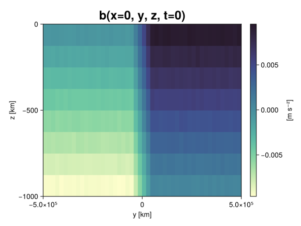
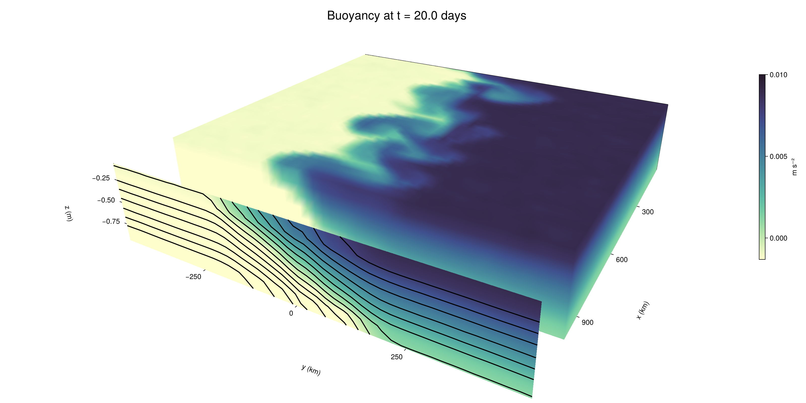

Baroclinic adjustment
In this example, we simulate the evolution and equilibration of a baroclinically unstable front.
Install dependencies
First let's make sure we have all required packages installed.
using Pkg
pkg"add Oceananigans, CairoMakie"using Oceananigans
using Oceananigans.UnitsGrid
We use a three-dimensional channel that is periodic in the x direction:
Lx = 1000kilometers # east-west extent [m]
Ly = 1000kilometers # north-south extent [m]
Lz = 1kilometers # depth [m]
grid = RectilinearGrid(size = (48, 48, 8),
x = (0, Lx),
y = (-Ly/2, Ly/2),
z = (-Lz, 0),
topology = (Periodic, Bounded, Bounded))48×48×8 RectilinearGrid{Float64, Periodic, Bounded, Bounded} on CPU with 3×3×3 halo
├── Periodic x ∈ [0.0, 1.0e6) regularly spaced with Δx=20833.3
├── Bounded y ∈ [-500000.0, 500000.0] regularly spaced with Δy=20833.3
└── Bounded z ∈ [-1000.0, 0.0] regularly spaced with Δz=125.0Model
We built a HydrostaticFreeSurfaceModel with an ImplicitFreeSurface solver. Regarding Coriolis, we use a beta-plane centered at 45° South.
model = HydrostaticFreeSurfaceModel(; grid,
coriolis = BetaPlane(latitude = -45),
buoyancy = BuoyancyTracer(),
tracers = :b,
momentum_advection = WENO(),
tracer_advection = WENO())HydrostaticFreeSurfaceModel{CPU, RectilinearGrid}(time = 0 seconds, iteration = 0)
├── grid: 48×48×8 RectilinearGrid{Float64, Periodic, Bounded, Bounded} on CPU with 3×3×3 halo
├── timestepper: QuasiAdamsBashforth2TimeStepper
├── tracers: b
├── closure: Nothing
├── buoyancy: BuoyancyTracer with ĝ = NegativeZDirection()
├── free surface: ImplicitFreeSurface with gravitational acceleration 9.80665 m s⁻²
│ └── solver: FFTImplicitFreeSurfaceSolver
├── advection scheme:
│ ├── momentum: WENO reconstruction order 5
│ └── b: WENO reconstruction order 5
└── coriolis: BetaPlane{Float64}We start our simulation from rest with a baroclinically unstable buoyancy distribution. We use ramp(y, Δy), defined below, to specify a front with width Δy and horizontal buoyancy gradient M². We impose the front on top of a vertical buoyancy gradient N² and a bit of noise.
"""
ramp(y, Δy)
Linear ramp from 0 to 1 between -Δy/2 and +Δy/2.
For example:
```
y < -Δy/2 => ramp = 0
-Δy/2 < y < -Δy/2 => ramp = y / Δy
y > Δy/2 => ramp = 1
```
"""
ramp(y, Δy) = min(max(0, y/Δy + 1/2), 1)
N² = 1e-5 # [s⁻²] buoyancy frequency / stratification
M² = 1e-7 # [s⁻²] horizontal buoyancy gradient
Δy = 100kilometers # width of the region of the front
Δb = Δy * M² # buoyancy jump associated with the front
ϵb = 1e-2 * Δb # noise amplitude
bᵢ(x, y, z) = N² * z + Δb * ramp(y, Δy) + ϵb * randn()
set!(model, b=bᵢ)Let's visualize the initial buoyancy distribution.
using CairoMakie
# Build coordinates with units of kilometers
x, y, z = 1e-3 .* nodes(grid, (Center(), Center(), Center()))
b = model.tracers.b
fig, ax, hm = heatmap(view(b, 1, :, :),
colormap = :deep,
axis = (xlabel = "y [km]",
ylabel = "z [km]",
title = "b(x=0, y, z, t=0)",
titlesize = 24))
Colorbar(fig[1, 2], hm, label = "[m s⁻²]")
fig
Simulation
Now let's build a Simulation.
simulation = Simulation(model, Δt=20minutes, stop_time=20days)Simulation of HydrostaticFreeSurfaceModel{CPU, RectilinearGrid}(time = 0 seconds, iteration = 0)
├── Next time step: 20 minutes
├── Elapsed wall time: 0 seconds
├── Wall time per iteration: NaN days
├── Stop time: 20 days
├── Stop iteration : Inf
├── Wall time limit: Inf
├── Callbacks: OrderedDict with 4 entries:
│ ├── stop_time_exceeded => Callback of stop_time_exceeded on IterationInterval(1)
│ ├── stop_iteration_exceeded => Callback of stop_iteration_exceeded on IterationInterval(1)
│ ├── wall_time_limit_exceeded => Callback of wall_time_limit_exceeded on IterationInterval(1)
│ └── nan_checker => Callback of NaNChecker for u on IterationInterval(100)
├── Output writers: OrderedDict with no entries
└── Diagnostics: OrderedDict with no entriesWe add a TimeStepWizard callback to adapt the simulation's time-step,
conjure_time_step_wizard!(simulation, IterationInterval(20), cfl=0.2, max_Δt=20minutes)Also, we add a callback to print a message about how the simulation is going,
using Printf
wall_clock = Ref(time_ns())
function print_progress(sim)
u, v, w = model.velocities
progress = 100 * (time(sim) / sim.stop_time)
elapsed = (time_ns() - wall_clock[]) / 1e9
@printf("[%05.2f%%] i: %d, t: %s, wall time: %s, max(u): (%6.3e, %6.3e, %6.3e) m/s, next Δt: %s\n",
progress, iteration(sim), prettytime(sim), prettytime(elapsed),
maximum(abs, u), maximum(abs, v), maximum(abs, w), prettytime(sim.Δt))
wall_clock[] = time_ns()
return nothing
end
add_callback!(simulation, print_progress, IterationInterval(100))Diagnostics/Output
Here, we save the buoyancy, $b$, at the edges of our domain as well as the zonal ($x$) average of buoyancy.
u, v, w = model.velocities
ζ = ∂x(v) - ∂y(u)
B = Average(b, dims=1)
U = Average(u, dims=1)
V = Average(v, dims=1)
filename = "baroclinic_adjustment"
save_fields_interval = 0.5day
slicers = (east = (grid.Nx, :, :),
north = (:, grid.Ny, :),
bottom = (:, :, 1),
top = (:, :, grid.Nz))
for side in keys(slicers)
indices = slicers[side]
simulation.output_writers[side] = JLD2OutputWriter(model, (; b, ζ);
filename = filename * "_$(side)_slice",
schedule = TimeInterval(save_fields_interval),
overwrite_existing = true,
indices)
end
simulation.output_writers[:zonal] = JLD2OutputWriter(model, (; b=B, u=U, v=V);
filename = filename * "_zonal_average",
schedule = TimeInterval(save_fields_interval),
overwrite_existing = true)JLD2OutputWriter scheduled on TimeInterval(12 hours):
├── filepath: ./baroclinic_adjustment_zonal_average.jld2
├── 3 outputs: (b, u, v)
├── array type: Array{Float64}
├── including: [:grid, :coriolis, :buoyancy, :closure]
├── file_splitting: NoFileSplitting
└── file size: 30.7 KiBNow we're ready to run.
@info "Running the simulation..."
run!(simulation)
@info "Simulation completed in " * prettytime(simulation.run_wall_time)[ Info: Running the simulation...
[ Info: Initializing simulation...
[00.00%] i: 0, t: 0 seconds, wall time: 21.503 seconds, max(u): (0.000e+00, 0.000e+00, 0.000e+00) m/s, next Δt: 20 minutes
[ Info: ... simulation initialization complete (23.539 seconds)
[ Info: Executing initial time step...
[ Info: ... initial time step complete (18.152 seconds).
[06.94%] i: 100, t: 1.389 days, wall time: 33.376 seconds, max(u): (1.240e-01, 1.158e-01, 1.622e-03) m/s, next Δt: 20 minutes
[13.89%] i: 200, t: 2.778 days, wall time: 986.806 ms, max(u): (2.101e-01, 1.727e-01, 1.912e-03) m/s, next Δt: 20 minutes
[20.83%] i: 300, t: 4.167 days, wall time: 975.998 ms, max(u): (3.023e-01, 2.721e-01, 1.772e-03) m/s, next Δt: 20 minutes
[27.78%] i: 400, t: 5.556 days, wall time: 863.083 ms, max(u): (3.701e-01, 4.089e-01, 2.047e-03) m/s, next Δt: 20 minutes
[34.72%] i: 500, t: 6.944 days, wall time: 861.150 ms, max(u): (4.617e-01, 6.099e-01, 2.171e-03) m/s, next Δt: 20 minutes
[41.67%] i: 600, t: 8.333 days, wall time: 889.954 ms, max(u): (6.629e-01, 9.771e-01, 3.288e-03) m/s, next Δt: 20 minutes
[48.61%] i: 700, t: 9.722 days, wall time: 909.899 ms, max(u): (1.014e+00, 1.208e+00, 4.166e-03) m/s, next Δt: 20 minutes
[55.56%] i: 800, t: 11.111 days, wall time: 916.490 ms, max(u): (1.324e+00, 1.210e+00, 5.140e-03) m/s, next Δt: 20 minutes
[62.50%] i: 900, t: 12.500 days, wall time: 909.806 ms, max(u): (1.425e+00, 1.128e+00, 4.273e-03) m/s, next Δt: 20 minutes
[69.44%] i: 1000, t: 13.889 days, wall time: 825.593 ms, max(u): (1.471e+00, 1.117e+00, 3.714e-03) m/s, next Δt: 20 minutes
[76.39%] i: 1100, t: 15.278 days, wall time: 949.610 ms, max(u): (1.541e+00, 1.135e+00, 3.154e-03) m/s, next Δt: 20 minutes
[83.33%] i: 1200, t: 16.667 days, wall time: 931.526 ms, max(u): (1.399e+00, 1.090e+00, 2.372e-03) m/s, next Δt: 20 minutes
[90.28%] i: 1300, t: 18.056 days, wall time: 861.470 ms, max(u): (1.358e+00, 1.109e+00, 2.592e-03) m/s, next Δt: 20 minutes
[97.22%] i: 1400, t: 19.444 days, wall time: 869.004 ms, max(u): (1.574e+00, 1.095e+00, 2.640e-03) m/s, next Δt: 20 minutes
[ Info: Simulation is stopping after running for 57.721 seconds.
[ Info: Simulation time 20 days equals or exceeds stop time 20 days.
[ Info: Simulation completed in 57.750 seconds
Visualization
All that's left is to make a pretty movie. Actually, we make two visualizations here. First, we illustrate how to make a 3D visualization with Makie's Axis3 and Makie.surface. Then we make a movie in 2D. We use CairoMakie in this example, but note that using GLMakie is more convenient on a system with OpenGL, as figures will be displayed on the screen.
using CairoMakieThree-dimensional visualization
We load the saved buoyancy output on the top, north, and east surface as FieldTimeSerieses.
filename = "baroclinic_adjustment"
sides = keys(slicers)
slice_filenames = NamedTuple(side => filename * "_$(side)_slice.jld2" for side in sides)
b_timeserieses = (east = FieldTimeSeries(slice_filenames.east, "b"),
north = FieldTimeSeries(slice_filenames.north, "b"),
top = FieldTimeSeries(slice_filenames.top, "b"))
B_timeseries = FieldTimeSeries(filename * "_zonal_average.jld2", "b")
times = B_timeseries.times
grid = B_timeseries.grid48×48×8 RectilinearGrid{Float64, Periodic, Bounded, Bounded} on CPU with 3×3×3 halo
├── Periodic x ∈ [0.0, 1.0e6) regularly spaced with Δx=20833.3
├── Bounded y ∈ [-500000.0, 500000.0] regularly spaced with Δy=20833.3
└── Bounded z ∈ [-1000.0, 0.0] regularly spaced with Δz=125.0We build the coordinates. We rescale horizontal coordinates to kilometers.
xb, yb, zb = nodes(b_timeserieses.east)
xb = xb ./ 1e3 # convert m -> km
yb = yb ./ 1e3 # convert m -> km
Nx, Ny, Nz = size(grid)
x_xz = repeat(x, 1, Nz)
y_xz_north = y[end] * ones(Nx, Nz)
z_xz = repeat(reshape(z, 1, Nz), Nx, 1)
x_yz_east = x[end] * ones(Ny, Nz)
y_yz = repeat(y, 1, Nz)
z_yz = repeat(reshape(z, 1, Nz), grid.Ny, 1)
x_xy = x
y_xy = y
z_xy_top = z[end] * ones(grid.Nx, grid.Ny)Then we create a 3D axis. We use zonal_slice_displacement to control where the plot of the instantaneous zonal average flow is located.
fig = Figure(size = (1600, 800))
zonal_slice_displacement = 1.2
ax = Axis3(fig[2, 1],
aspect=(1, 1, 1/5),
xlabel = "x (km)",
ylabel = "y (km)",
zlabel = "z (m)",
xlabeloffset = 100,
ylabeloffset = 100,
zlabeloffset = 100,
limits = ((x[1], zonal_slice_displacement * x[end]), (y[1], y[end]), (z[1], z[end])),
elevation = 0.45,
azimuth = 6.8,
xspinesvisible = false,
zgridvisible = false,
protrusions = 40,
perspectiveness = 0.7)Axis3()We use data from the final savepoint for the 3D plot. Note that this plot can easily be animated by using Makie's Observable. To dive into Observables, check out Makie.jl's Documentation.
n = length(times)41Now let's make a 3D plot of the buoyancy and in front of it we'll use the zonally-averaged output to plot the instantaneous zonal-average of the buoyancy.
b_slices = (east = interior(b_timeserieses.east[n], 1, :, :),
north = interior(b_timeserieses.north[n], :, 1, :),
top = interior(b_timeserieses.top[n], :, :, 1))
# Zonally-averaged buoyancy
B = interior(B_timeseries[n], 1, :, :)
clims = 1.1 .* extrema(b_timeserieses.top[n][:])
kwargs = (colorrange=clims, colormap=:deep, shading=NoShading)
surface!(ax, x_yz_east, y_yz, z_yz; color = b_slices.east, kwargs...)
surface!(ax, x_xz, y_xz_north, z_xz; color = b_slices.north, kwargs...)
surface!(ax, x_xy, y_xy, z_xy_top; color = b_slices.top, kwargs...)
sf = surface!(ax, zonal_slice_displacement .* x_yz_east, y_yz, z_yz; color = B, kwargs...)
contour!(ax, y, z, B; transformation = (:yz, zonal_slice_displacement * x[end]),
levels = 15, linewidth = 2, color = :black)
Colorbar(fig[2, 2], sf, label = "m s⁻²", height = Relative(0.4), tellheight=false)
title = "Buoyancy at t = " * string(round(times[n] / day, digits=1)) * " days"
fig[1, 1:2] = Label(fig, title; fontsize = 24, tellwidth = false, padding = (0, 0, -120, 0))
rowgap!(fig.layout, 1, Relative(-0.2))
colgap!(fig.layout, 1, Relative(-0.1))
save("baroclinic_adjustment_3d.png", fig)
Two-dimensional movie
We make a 2D movie that shows buoyancy $b$ and vertical vorticity $ζ$ at the surface, as well as the zonally-averaged zonal and meridional velocities $U$ and $V$ in the $(y, z)$ plane. First we load the FieldTimeSeries and extract the additional coordinates we'll need for plotting
ζ_timeseries = FieldTimeSeries(slice_filenames.top, "ζ")
U_timeseries = FieldTimeSeries(filename * "_zonal_average.jld2", "u")
B_timeseries = FieldTimeSeries(filename * "_zonal_average.jld2", "b")
V_timeseries = FieldTimeSeries(filename * "_zonal_average.jld2", "v")
xζ, yζ, zζ = nodes(ζ_timeseries)
yv = ynodes(V_timeseries)
xζ = xζ ./ 1e3 # convert m -> km
yζ = yζ ./ 1e3 # convert m -> km
yv = yv ./ 1e3 # convert m -> km49-element Vector{Float64}:
-500.0
-479.1666666666667
-458.3333333333333
-437.5
-416.6666666666667
-395.8333333333333
-375.0
-354.1666666666667
-333.3333333333333
-312.5
-291.6666666666667
-270.8333333333333
-250.0
-229.16666666666666
-208.33333333333334
-187.5
-166.66666666666666
-145.83333333333334
-125.0
-104.16666666666667
-83.33333333333333
-62.5
-41.666666666666664
-20.833333333333332
0.0
20.833333333333332
41.666666666666664
62.5
83.33333333333333
104.16666666666667
125.0
145.83333333333334
166.66666666666666
187.5
208.33333333333334
229.16666666666666
250.0
270.8333333333333
291.6666666666667
312.5
333.3333333333333
354.1666666666667
375.0
395.8333333333333
416.6666666666667
437.5
458.3333333333333
479.1666666666667
500.0Next, we set up a plot with 4 panels. The top panels are large and square, while the bottom panels get a reduced aspect ratio through rowsize!.
set_theme!(Theme(fontsize=24))
fig = Figure(size=(1800, 1000))
axb = Axis(fig[1, 2], xlabel="x (km)", ylabel="y (km)", aspect=1)
axζ = Axis(fig[1, 3], xlabel="x (km)", ylabel="y (km)", aspect=1, yaxisposition=:right)
axu = Axis(fig[2, 2], xlabel="y (km)", ylabel="z (m)")
axv = Axis(fig[2, 3], xlabel="y (km)", ylabel="z (m)", yaxisposition=:right)
rowsize!(fig.layout, 2, Relative(0.3))To prepare a plot for animation, we index the timeseries with an Observable,
n = Observable(1)
b_top = @lift interior(b_timeserieses.top[$n], :, :, 1)
ζ_top = @lift interior(ζ_timeseries[$n], :, :, 1)
U = @lift interior(U_timeseries[$n], 1, :, :)
V = @lift interior(V_timeseries[$n], 1, :, :)
B = @lift interior(B_timeseries[$n], 1, :, :)Observable([-0.009366948860904036 -0.008139814487180005 -0.00686353194951965 -0.005648084837746595 -0.004389518868377463 -0.003135674512548149 -0.0018626125445849143 -0.0006402483459509889; -0.009377373264984935 -0.008138258748385148 -0.006856906012383184 -0.0056316483226815095 -0.0043850076266694175 -0.0031084451093011376 -0.0018933884752931277 -0.0006025756711015842; -0.009383197348725293 -0.0081307091094791 -0.006901222405430757 -0.005595036694835159 -0.004358564260888751 -0.0031011837549870963 -0.00187370556055723 -0.0006220174721504899; -0.00937334795574683 -0.008141948320148711 -0.006899316660272545 -0.005631600894204701 -0.004372112762110694 -0.0031314559780630104 -0.0018663495779013967 -0.0006233865068619012; -0.009406940278472947 -0.008120764415766262 -0.0068682836945643255 -0.005619899999504627 -0.00437462983327924 -0.0030991250003017923 -0.0019123138903768128 -0.0006389125424928225; -0.009377995334132796 -0.00812582994525809 -0.006879261308603494 -0.005632436737748127 -0.004363546086482863 -0.0030946436466252427 -0.0018788993903670209 -0.0006001287476100834; -0.009378812311393717 -0.008126113386369246 -0.0068509585141915885 -0.005618057761544299 -0.004339580579608245 -0.003111181480311896 -0.0018560929326497443 -0.0006156170676238163; -0.009392121234811222 -0.008136600918939571 -0.006873587337489228 -0.005624018478749975 -0.004366960732367034 -0.003112862452806557 -0.0018558829527258213 -0.0006392608475168929; -0.009375721216640237 -0.008107305809012076 -0.006864145073326469 -0.005602029859943615 -0.0043769876879651394 -0.003121260141593453 -0.0019048961354271206 -0.0006300409239511647; -0.0093590817517392 -0.008150922576443903 -0.0068751748749479764 -0.005599208314498799 -0.004378164101436064 -0.003129148812994614 -0.001881815241183294 -0.0006467618679382669; -0.00937816553996753 -0.008124371074019046 -0.006867577402307374 -0.005636070930663008 -0.004373150402449347 -0.003139555905411394 -0.0018889016446527202 -0.0006344323419388221; -0.009374142561252167 -0.00813729334959398 -0.006861138150993716 -0.005626166255454095 -0.004346923913965018 -0.0031151088246756213 -0.0018807865923765224 -0.0006279275709187624; -0.009381555177159715 -0.008116349798897303 -0.006885967088534002 -0.005637813088931788 -0.004377390515370644 -0.0031080716447577793 -0.00188242604394078 -0.0006234644064372383; -0.009372714134166004 -0.008129155145452297 -0.0068864887640291495 -0.005627846441700481 -0.004358036925552741 -0.0031664083058256126 -0.00187850493432581 -0.0006341880794902885; -0.009381041734303118 -0.00811342816565473 -0.006866172766837081 -0.005647829097929227 -0.0043685456314552715 -0.0031332938198257465 -0.0018863346975699958 -0.0006471594377302236; -0.00936744902482588 -0.008125357148707156 -0.00688083754976537 -0.005622327943256857 -0.004374940962221573 -0.003126541966955812 -0.0018606282825918401 -0.0006206511295361123; -0.00937055342951011 -0.008123015902106834 -0.006866406404755394 -0.0056275247725397215 -0.00437456016657422 -0.0031244213739134246 -0.0018692797836164711 -0.0006389960772513787; -0.009366778482083796 -0.008131185368672697 -0.006880853407094612 -0.0056487057512061185 -0.004362817078510536 -0.0031447948096793494 -0.0018567723425881387 -0.0006247813751228017; -0.009379574015314128 -0.008122871275102621 -0.006888548009780023 -0.005627894396459957 -0.004376088862688581 -0.003115463280557682 -0.0018801287177961535 -0.0006165774982046123; -0.009372220673951145 -0.008136493434311326 -0.006879258039969184 -0.00561932191047296 -0.004383195774430186 -0.0031271694361388255 -0.0018585567116424125 -0.0006195334762187575; -0.009378143157913828 -0.00815498261647902 -0.0068750324414212334 -0.005657894340777643 -0.0043545633928201025 -0.0031352827188901775 -0.0018469691716829365 -0.0006469236555543266; -0.009362903271239802 -0.008123856596502856 -0.006880012361791689 -0.005633734551620002 -0.004362472897810988 -0.0031226285229244075 -0.0018693858629399748 -0.0006394060371745666; -0.007503507833929657 -0.00622177210910056 -0.0049922369500540525 -0.0037219479957025722 -0.002496259329289103 -0.001245395891824829 2.4585230015192215e-5 0.0012468668744340758; -0.005433004832720515 -0.0041771979813839686 -0.0029236661537860274 -0.0016433367779698947 -0.0004191280625487147 0.0008467127294942413 0.002054840957117282 0.003330813076470287; -0.003342483164278678 -0.0020705338508615044 -0.0008210063367588101 0.00040622309451866947 0.0016689926938554037 0.00291069093759169 0.0041769506417167965 0.005424915581881702; -0.0012152795016549377 2.421114545794247e-5 0.0012658699401369503 0.002503572435112716 0.003750382825004087 0.005009616073344711 0.006254285927904797 0.007505132020656782; 0.0006499464474829496 0.0018593087880064655 0.0031351691616654243 0.004354156918848996 0.00561723119431991 0.006880481513722892 0.0081249345136602 0.009345498718004911; 0.000619538685672621 0.0018779894768718788 0.003115124948856287 0.004351676993482028 0.005612811967554387 0.006878722633738096 0.00813592733855539 0.009378843087127059; 0.0006182894117732933 0.0018608684844088122 0.0031247370174132907 0.004363846146696194 0.005612560292708588 0.006874313610965574 0.008131467592222039 0.009401095252533213; 0.0006161079771809141 0.0019059164128228997 0.0031441000805921167 0.0043707418344912175 0.005614493529762311 0.006868288551351731 0.008141346274236815 0.009376710254905237; 0.0006184852115422775 0.0018707282087129526 0.0031008224635566697 0.004394630281424419 0.005626159882811485 0.006879145754881934 0.008111360860560362 0.009364402682193388; 0.0006357698112226447 0.0018692102133238198 0.003122630561053779 0.004371900716092608 0.005612521286513306 0.0068931248038390834 0.008133856572015534 0.009391658811673262; 0.0006238550041035871 0.0018693287895619262 0.003104029496425889 0.004396827991501882 0.005593560397217818 0.006885905604021597 0.00814005775385018 0.00938167457334464; 0.0006425793030484711 0.0018950932017447388 0.0031099583301752768 0.004396066481478708 0.005622934885693037 0.006875006340763159 0.008117398739509557 0.009376877078434417; 0.000627769154600823 0.001873311239983308 0.0031386302718437787 0.004379824070885308 0.0056186434813549286 0.006869973626937538 0.008128298963581358 0.009376394353336882; 0.0006222350126520738 0.0018720148984580718 0.003096475870672038 0.004375873700935424 0.0056303042012263846 0.006905634928867625 0.008122555623667477 0.009387923774964179; 0.0006294309110275502 0.0018881552882024325 0.003120449778060655 0.004394629358110876 0.005635819725107501 0.0068885035117312796 0.008121921599164656 0.009384174710285005; 0.0006167698349495101 0.001869671120742264 0.003119884260262284 0.004377115341517887 0.005634944875696567 0.006856298479620195 0.008145974068797586 0.009365110573257895; 0.0006270802471406385 0.0018753242443481867 0.003108555748821604 0.004377787659350944 0.0056235198821188515 0.006890800586485525 0.008130029103129294 0.00938114613708176; 0.0006302376397299883 0.001900615019812123 0.003123288441966197 0.00433450300102544 0.0056140300518782065 0.006867408080845097 0.008114442045106592 0.009363753497976324; 0.0006116341771533446 0.0018875217275912994 0.0031058660812767085 0.004378767644183513 0.0056535206874785094 0.006866297266325994 0.008130929213502338 0.009369522603398425; 0.0006311470464905187 0.0018864378298640513 0.003124690540895347 0.004377802828054379 0.0056061735350807955 0.0068635991563636605 0.00812447295538414 0.00936165815917099; 0.0006333592990130881 0.001889154126654776 0.003119522324762107 0.004359568031208578 0.005643336299182057 0.006884967627276227 0.008109544127097532 0.009391582485678647; 0.0005996801157496221 0.0018838622652311693 0.0031080786225699715 0.004361494163899337 0.005637543286488557 0.006876004001229727 0.008138631158511217 0.009367942799992158; 0.0006405131842765954 0.00184081020798211 0.0031404631585889298 0.004368248093759685 0.005627958509536679 0.00688064771560127 0.008153254826801131 0.009354222445974177; 0.0006188026091980255 0.0018952568118170128 0.003116471914464455 0.004381611460565959 0.005621068352666805 0.006885469651303153 0.008139367649579078 0.009353840009115134; 0.0005949177240774929 0.0018747014600135753 0.0031427607709132842 0.004367852129862873 0.005601048181654629 0.006867351921504096 0.008136168108707383 0.009373682940640731; 0.000635030343156724 0.001890321831580435 0.003141667586000874 0.0043959259939401595 0.0056114730670327505 0.0068658562697514365 0.008136135509623497 0.009386045271793564])
and then build our plot:
hm = heatmap!(axb, xb, yb, b_top, colorrange=(0, Δb), colormap=:thermal)
Colorbar(fig[1, 1], hm, flipaxis=false, label="Surface b(x, y) (m s⁻²)")
hm = heatmap!(axζ, xζ, yζ, ζ_top, colorrange=(-5e-5, 5e-5), colormap=:balance)
Colorbar(fig[1, 4], hm, label="Surface ζ(x, y) (s⁻¹)")
hm = heatmap!(axu, yb, zb, U; colorrange=(-5e-1, 5e-1), colormap=:balance)
Colorbar(fig[2, 1], hm, flipaxis=false, label="Zonally-averaged U(y, z) (m s⁻¹)")
contour!(axu, yb, zb, B; levels=15, color=:black)
hm = heatmap!(axv, yv, zb, V; colorrange=(-1e-1, 1e-1), colormap=:balance)
Colorbar(fig[2, 4], hm, label="Zonally-averaged V(y, z) (m s⁻¹)")
contour!(axv, yb, zb, B; levels=15, color=:black)Finally, we're ready to record the movie.
frames = 1:length(times)
record(fig, filename * ".mp4", frames, framerate=8) do i
n[] = i
endThis page was generated using Literate.jl.